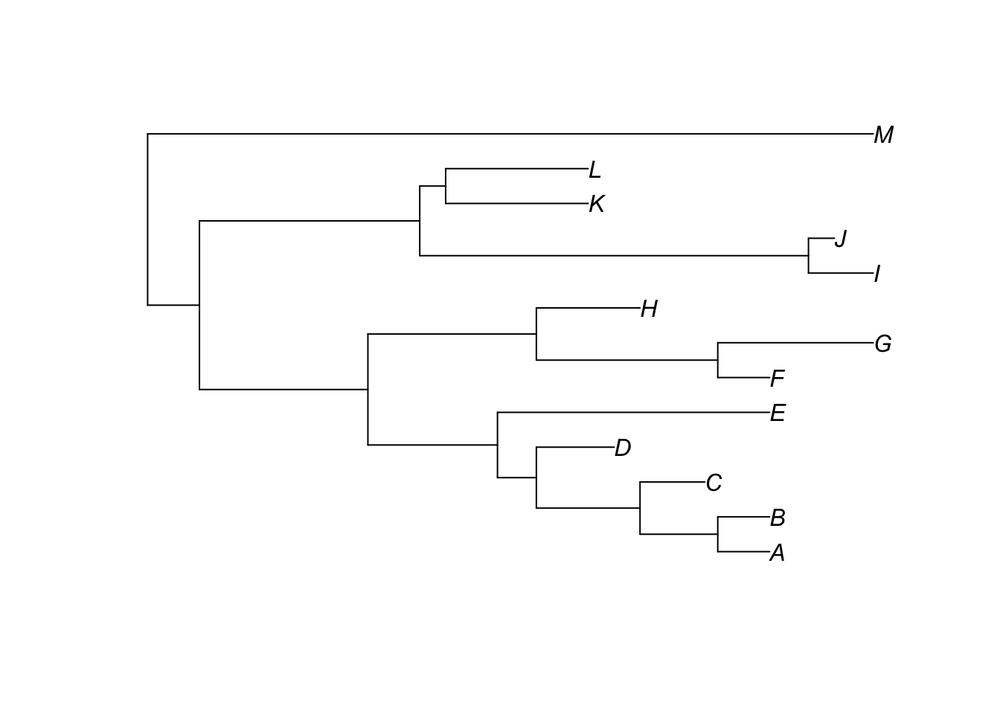
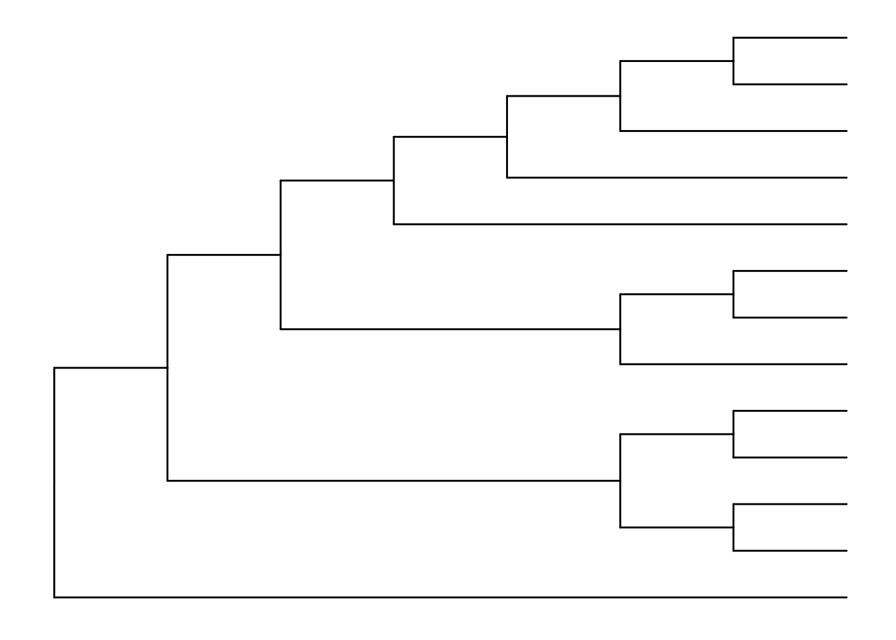
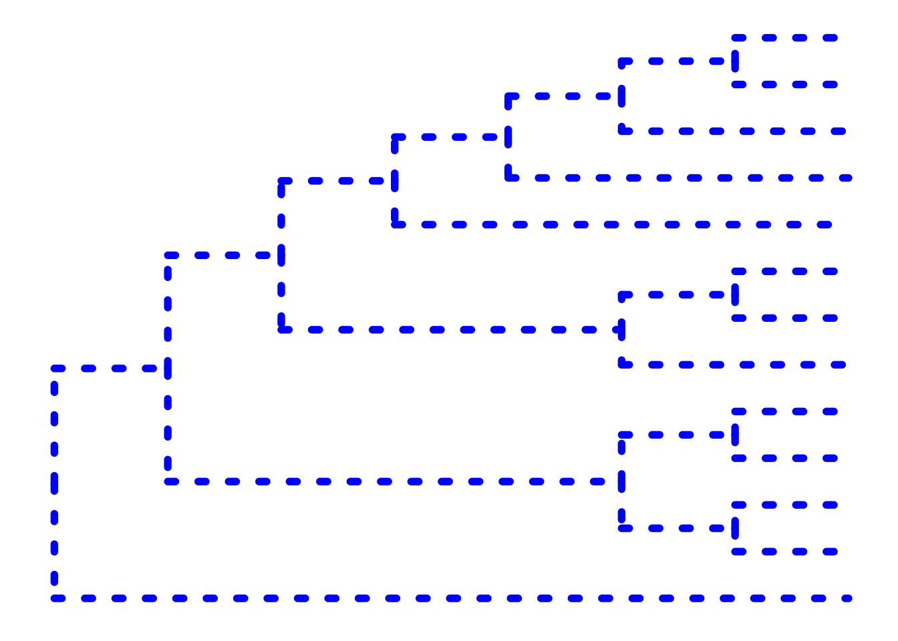
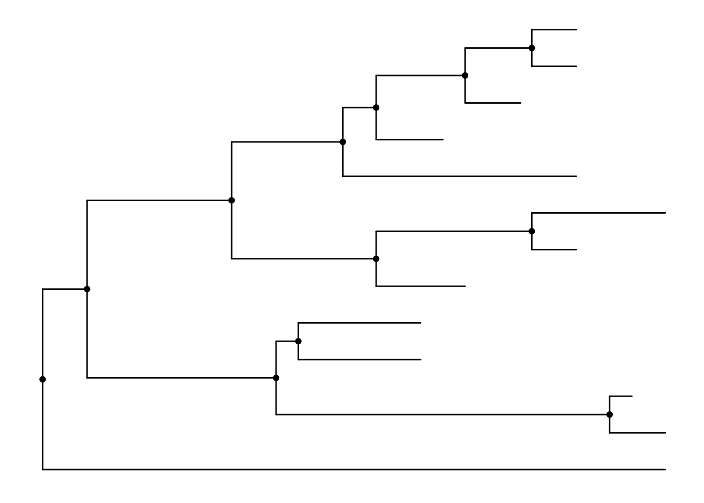
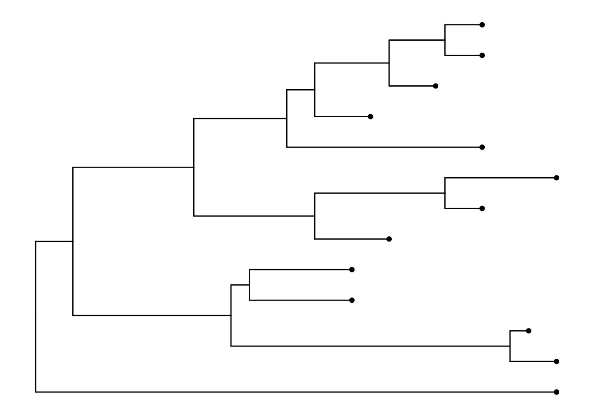
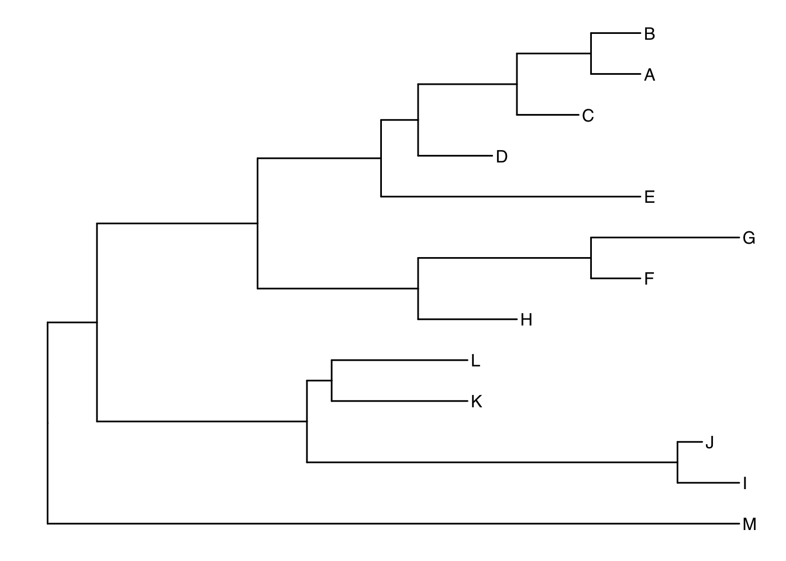
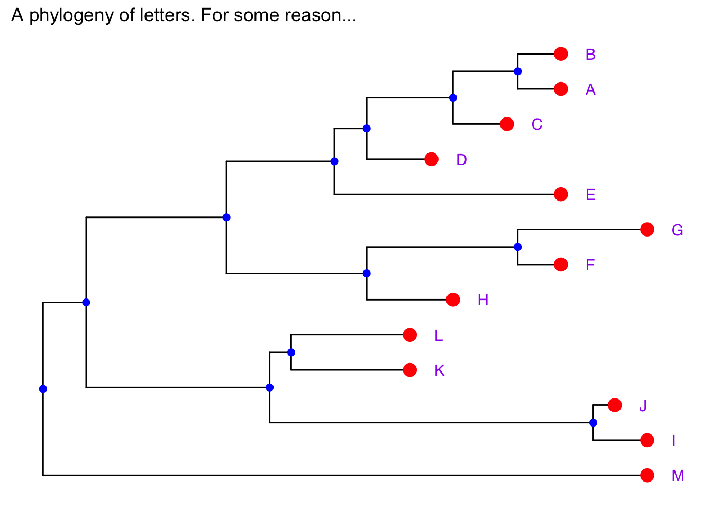
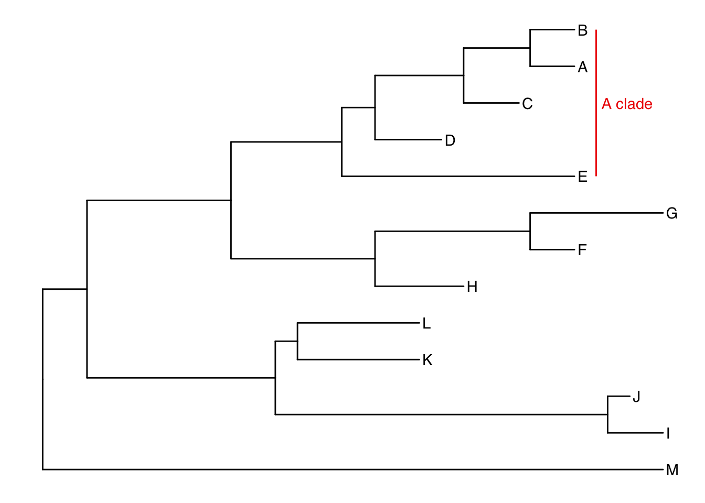
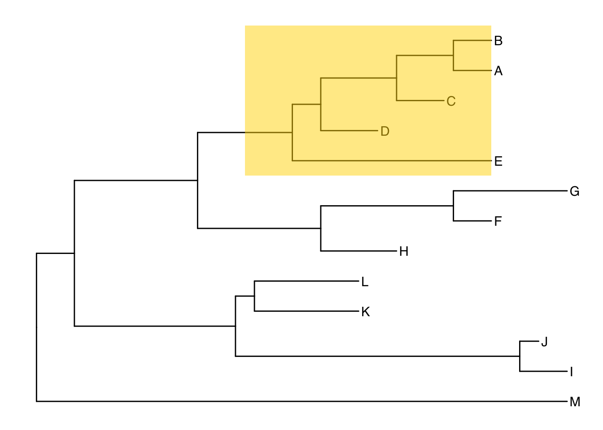

From LIFE223, you know R as a powerful statistical tool. You will also be aware that it is an incredibly flexible tool for plotting data. In this workshop, we will be working with phylogenies in R and manipulating them to produce informative plots.
In this tutorial we’ll mostly be using a package called ggtree. To install it, we need another package called BiocManager.
install.packages("BiocManager")
BiocManager::install("ggtree")
library(ggtree)We will also need to use phylobase, ggimage and it would help to have the tidyverse packages loaded since we’ll be using the syntax of ggplot2. If you get an error message, make sure the packages are installed first.
library(tidyverse)
library(phylobase)
library(ggimage)Let’s start by importing a tree. Make sure your working directory is set to wherever you have saved the tree_newick file. If you run this line, you should see an object called “tree” appear in your global environment.
tree <- read.tree("tree_newick.nwk")If we take a look at the structure of our tree object using the str function. The tree is stored as an object of class phylo.
str(tree)## List of 4
## $ edge : int [1:24, 1:2] 14 15 16 17 18 19 20 20 19 18 ...
## $ edge.length: num [1:24] 4 13 10 3 8 6 4 4 5 6 ...
## $ Nnode : int 12
## $ tip.label : chr [1:13] "A" "B" "C" "D" ...
## - attr(*, "class")= chr "phylo"
## - attr(*, "order")= chr "cladewise"We can see a list of 4 elements of the tree object. The first (edge) contains the edges (also known as branches) of the phylogeny and their labels. The next is edge.length which contains the lengths of the branches. Nnode specifies the number of nodes and finally tip.label contains the labels of the tips. In this case, we just have letters for tip labels.
Things become clearer when we plot the tree. We can do this with the plot function in base R.
plot(tree)
This plot is fine for a quick check to make sure the tree looks as we expected it to. Let’s look at making a more attractive plot with ggtree.
The syntax we’ll be using here is a little different that what you may be used to so don’t get intimidated. ggtree uses the same syntax as a package called ggplot2. This works by creating layers (known as geoms) and plotting them over each other.
We’ll start by using ggtree to plot our tree. This is the base layer of the plot.
ggtree(tree)You may want to plot the same tree as a cladogram. To do this, disable branch lengths.
ggtree(tree, branch.length = "none")
There are many other options we can include to customise our tree.
ggtree(tree,
branch.length="none",
color="blue",
size=2,
linetype=3)
Geoms are new layers to plot on or alongside your tree. Here I’m creating the plot as an object in R. You should see “p” appear in your environment but no plot will appear.
p <- ggtree(tree)Now let’s plot it whilst adding new layers. Note that the hash denotes text not to be interpreted by R. This is a great way to annotate your code so that you can recall what it does!
p + geom_nodepoint() #Add node points
p + geom_tippoint() # add tip points
p + geom_tiplab() # Label the tips
These geoms can be combined as you see fit. This gives you a lot of flexibility in how you plot your trees.
p +
geom_tiplab(offset = 2, color = "purple") +
geom_nodepoint(color = "blue", size = 2) +
geom_tippoint(color = "red", size = 4) +
ggtitle("A phylogeny of letters. For some reason...")
To label clades, we need to be able to identify the node of the most recent common ancestor. The function MRCA tells us that the common ancestor of C and E is node 17.
MRCA(tree, tip = c("C", "E"))## [1] 17Let’s use a new geom to label the clade.
ggtree(tree) +
geom_tiplab() +
geom_cladelabel(node=17,
label="A clade",
color="red2",
offset=1)
Pretty good. But there are other options. Again it’s a matter of personal preference. You may prefer to overlay a translucent rectangle over your clade of interest. 